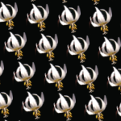
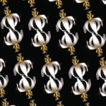
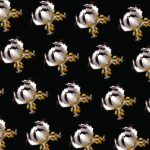
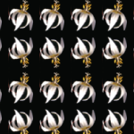
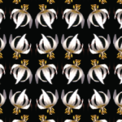
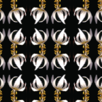

Wallpaper Patterns
See help for help on installing, and running.
The patterns
This applet draw a set of set of wallpaper pattern, which are repeating patterns which fill the plane and exhibit certain mathematics symmetries. There are only 17 different possible types which fill the plane and the different patterns have been known for quite a long time now.
See mathematical description for more details.
|  | P1 |  | P2 |  | CM |  | CMM | ||
|  | PM |  | PG |  | PMG |  | PGG |  | PMM |
 | P4 |  | P4M |  | P4G | ||||
 | P3 |  | P31M |  | P3M1 |  | P3 |  | P3M |
The patterns are made by combination of different types of symetry including, Translation (All patterns have this), Reflection (M), Glide-Reflection - translate a bit and then reflect (G) 180° rotation (P2), 120° rotation (P3), 90° rotation (P4), 60° rotation (P6).
Copyright R Morris 2007